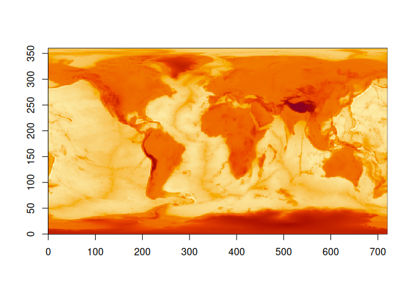
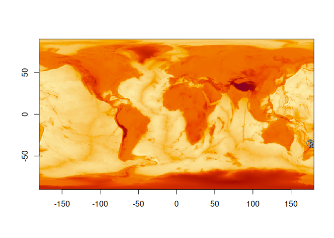
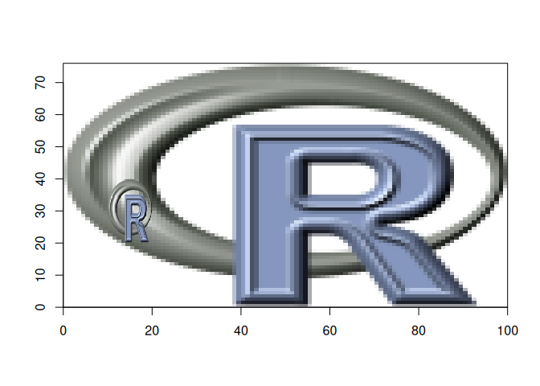
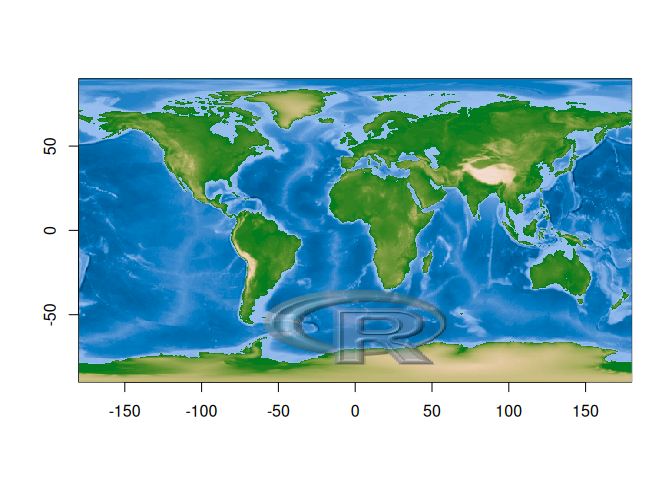
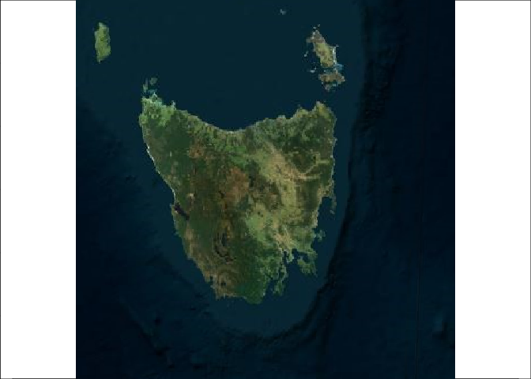
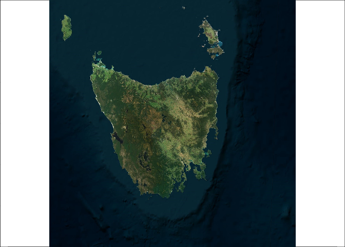

The goal of ximage is to be like ‘image()’ and ‘rasterImage()’ but with the missing functionality and usability problems fixed. Draw an image from whatever you have, where you want it, with no dependencies beyond base R.
ximage supports making images from
- numeric, character, byte matrix
- numeric array (including RGB/A, and grey/alpha)
- nativeRaster
- data returned from
vapour::gdal_raster_()orgdalraster::read_ds()functions which include numeric, character, byte vectors or nativeRaster types
Missing values display as a colour of your choosing (na.col, transparent by default), a constant alpha can be applied over any input for overlay work, and zlim anchors absolute colours across multiple plots.
Alongside ximage() there are matching adornment functions that share its layout conventions: xcontour() (contours at cell centres), xtext() (cell values as labels), and xrect() (rectangles from extents).
The orientation is in “raster order”, i.e. when you’re looking at the picture it’s top left to top right, then scan lines down each row to the bottom (like western reading and par(mfrow) order). This orientation is explored in orientation vignette.
This matches the way that spatial data readers read imagery, and is equivalent to populating an R matrix with matrix(<>, nrow, ncol, byrow = TRUE) (note backwards order of nrow,ncol). Please note that getting the data out of the matrix is not in this order, but it is with as.vector(t(m)). Higher dimensional arrays need more care, there’s no byrow for array(). The full story is in the package vignette: vignette("orientation", package = "ximage").
Installation
Install the development version from GitHub:
# install.packages("remotes")
remotes::install_github("hypertidy/ximage")Example
This is a basic example which shows you how to image a topographic dataset, with arbitrary image overlay placement.

## or, plot in the geographic space (we happen to know this for this matrix)
ximage(topo, extent = c(-180, 180, -90, 90), axes = FALSE)
ximage(logo_a, extent = c(170, 180, -40, -30), add = TRUE)
axis(1); axis(2); box()
ximage(logo_a) ## plot a RGB array, a new plot in its own index space
## overlay a native raster, and a matrix with its own palette
ximage(logo_n, extent = c(10, 20, 20, 40), add = TRUE)
ximage(topo, extent = c(40, 60, 30, 50), add = TRUE, col = hcl.colors(256))
Missing values and constant transparency are first-class: here the ocean is set to missing and displays as na.col, and an RGB overlay is applied with constant alpha.
land <- topo
land[land < 0] <- NA
ximage(topo, extent = c(-180, 180, -90, 90), col = hcl.colors(64, "Blues 3"))
ximage(land, extent = c(-180, 180, -90, 90), add = TRUE,
col = hcl.colors(64, "Terrain 2"))
ximage(logo_a, extent = c(-60, 60, -80, -35), add = TRUE, alpha = 0.5)
We can get imagery from the internet, and plot it very quickly.
library(vapour)
virtual_earth <- "<GDAL_WMS><Service name=\"VirtualEarth\"><ServerUrl>http://a${server_num}.ortho.tiles.virtualearth.net/tiles/a${quadkey}.jpeg?g=90</ServerUrl></Service><MaxConnections>4</MaxConnections><Cache/></GDAL_WMS>"
par(mar = rep(0, 4))
px <- dev.size("px")
px[which.min(px)] <- 0 ## zero means GDAL fills this dimension, preserving aspect
## change lon_0 and lat_0 to anywhere you like
im <- gdal_raster_nara(virtual_earth, target_ext = c(-1, 1, -1, 1) * 3e5, target_dim = px, target_crs = "+proj=laea +lon_0=147 +lat_0=-42")
system.time(ximage(im, asp = 1))
#> user system elapsed
#> 0.003 0.000 0.004
## crank up the size it's still fast
px <- px * 4
im <- gdal_raster_nara(virtual_earth, target_ext = c(-1, 1, -1, 1) * 3e5, target_dim = px, target_crs = "+proj=laea +lon_0=147 +lat_0=-42")
system.time(ximage(im, asp = 1))
Code of Conduct
Please note that the ximage project is released with a Contributor Code of Conduct. By contributing to this project, you agree to abide by its terms.